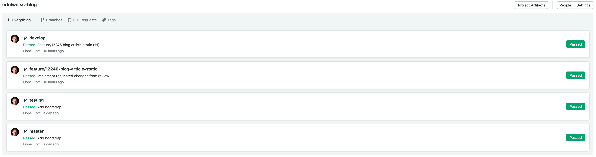

Renuo Application Setup Guide
This repo is the Renuo collection of best-practices to set-up apps. We are a Rails company, so the most value probably will be found in the parts concerning Rails. But anyways you’ll also find a lot about the inner workings of Renuo.
Some Notes on the Side
If you are reading this document, it means that you have to setup a new application. A new project started and it’s now time to set everything up so that everyone, in your team, can start working on it.
This document will try to be as minimalist as possible and provide you with all the steps to set up the application as fast as possible. There are things, in Renuo projects, which are mandatory, other that are suggested. This guide is the result of more than ten years of experience, so this means three things: it’s very robust, very opinionated, and possibly very outdated.
You are always welcome to challenge the guide and improve it with a Pull Request.
The basic things that need to be ready before the team can start working on a project are:
- An existing git repository containing the project
- Two branches: main and develop
- A README with essential information about the application
- Convenience-scripts:
bin/setup,bin/check,bin/fastcheck,bin/run - One running, green test
- Continuous integration (CI) ready, running and green for both branches
- Continuous deployment (CD) ready and running for both branches
- The application deployed for both branches
As an appendix, you’ll find a checklist you can use to follow the guide.
❗ Do not blindly follow this guide, always think about what you are doing and why. If you think something is wrong or simply outdated, improve this guide with a Pull Request.
We want you to know exactly the reason behind each single step of this guide.
Thank you for your work and have fun! üéâ
Serving the Documentation Locally
To view this documentation on your machine, run the following command:
mbook serve
License
Attribution 4.0 International (CC BY 4.0)
Create a Git Repository
At Renuo we currently use GitHub as our git repository. You should already be part of the Renuo Organisation and have permissions to do so. If that’s not the case, double check the Laptop Setup Guide or ask wg-operations.
To create a new GitHub project you can use the tool you prefer, but it should have the following characteristics:
- Should be under
renuoorganisation - Should have
[project-name]as a name - Should be private (unless you are creating an OpenSource project)
Use the command hub create -p renuo/[project-name] to create the repo and add it to the origin of the current folder.
Public repos need a license
If your repository is public, ensure that it contains a license. We usually use the MIT license if possible or a CreativeCommons license for documentation-only repositories (such as the application setup guide üôÇ). You can add a license directly on GitHub while initializing a repository by selecting a license template in the ‚ÄúAdd a license‚Äù dropdown. However, if the repository is already initialized, you‚Äôre still able to add a license using a template:
- Click
Create new file - Use
LICENSEfor the filename - Then click on
Choose a license templateand select the MIT license - Fill in Renuo AG in the full name placeholder
- Click submit and commit the file
Gitflow
At Renuo we follow gitflow convention and we use it in every project. Please check it out and read how it works if you don’t know it yet. It’s very important that you know how gitflow works to work at Renuo.
Since we follow gitflow, we have two main branches connected, via CD, to two servers, we call “main” and “develop”.
graph LR
A[main] --> CI1(CI) --> CD1(CD)
CD1(CD) --> S11(server)
CD1(CD) --> S12(server)
B[develop] --> CI2(CI) --> CD2(CD)
CD2(CD) --> S21(server)
CD2(CD) --> S22(server)
B[develop] --> C[feature/1337-ff] --> CI3(CI)
sequenceDiagram
actor Developer
participant G as GitHub
participant CI
participant S as Server
rect rgb(191, 223, 255)
Developer->>G: git push origin develop or main
G->>CI: notify about code change
CI->>G: checkout code
CI->>CI: run tests
CI->>S: deploy
end
Go Live
DNS, SSL & SMTP
- Check your DNS records, for example
CNAMEto Heroku (see their docs)TXTrecords for SparkPost sending domainsCAArecords (see Cloudflare)
- If SparkPost has been set up with the renuoapp.ch domain and the project has its own domain now, set up SparkPost again with its own domain
- Verify that SparkPost mails are working and the sending domain is validated.
- Verify that SSL is working correctly
If the final domain isn’t already in use, you can configure it also already:
Add a CNAME DNS record pointing to the app ([project-name]-main.renuoapp.ch).
URL rewriting on Cloudflare
For user comfort we redirect HTTP calls to https://example.com to https://www.example.com. This is done via page rules in Cloudflare.
- Add a new page rule
- Enter
example.com/* - Choose “Forwarding URL”
- Choose “301 - Permanent Redirect”
- Enter
https://www.example.com/$1 - Click “Save and Deploy”
Deploio (Preferred Deployment Method)
We now recommend deploying applications using Deploio, moving away from Heroku.
When preparing your app for production on Deploio, ensure the following:
- Verify the machine type of the PostgreSQL database in the PostgreSQL resource view.
- Confirm the configured application size in the application configuration tab.
- Ensure the application replica count is correctly set in the application configuration tab.
For detailed instructions and best practices, including quick start guides for a variety of frameworks, please refer to the Deploio deployment documentation.
Heroku
- Check the size and amount of dynos on Heroku
- Check the database size plan on Heroku and upgrade if it is foreseeable that 10’000 rows are exceeded in a short time
- Check additional addons and according plans on Heroku
Other
- Reset admin credentials, seeds, … if necessary
- Test the whole application by hand if everything is working as it should
Naming Conventions
Naming the project properly is very important and even more important is doing it from the beginning. We carefully choose the names for our projects and we always stick to the following conventions so you are asked to do the same.
Project Name
- The project name
[project-name]only uses[a-z0-9]and dash-. No underscore_. - A project name is easy to remember and easy to pronounce. In the best case it consists of one word.
- The project name should be unique and not too long.
- It should not contain any version information.
Extended Use
- Use
[project-name]for project names and services which are branch-independent. - Use
[project-name]-[branch]for deployed projects ([branch]means the gitflow branch and not RAILS_ENV). - Use
[project-name]-[purpose]-[branch]for deployed projects (e.g. one11-web-main). - Use
[project-name]-local-[user]-[rails_env]for local names which interact with online services (e.g. S3).
Note: Previously on Heroku, the convention was to use [project-name]-[branch]-[purpose] for deployed projects (e.g. kingschair-main-assets). This has been updated due to deplo.io.
Examples
- food-calendar, food-calendar-develop, food-calendar-develop-assets
- food-calendar-api, food-calendar-api-develop, food-calendar-api-develop-assets
- bauer-shoes, bauer-cars, bauer-cars-static
- vdrb-kas, vdrb-mv
- red-shoes, blue-hats (two projects which are independent and have the same customer)
Scope of Application
The naming conventions should be applied everywhere. Some examples:
- Amazon S3 (usually [project-name]-[branch])
- Github ([project-name])
- Heroku ([project-name]-[branch])
- Redmine ([project-name])
- Semaphore CI (servers are named [project-name]-[branch])
- Drive ([project-name])
- New Relic ([project-name]-[branch])
- Get Sentry
- App name in Rails
- Sparkpost Account
- External services (e.g. datatrans)
- Database names
- Nginx / Apache
- Config files
- Directory names
- Analytics, Webmaster tools, Adwords
- Etc…
Security
Email contact
Make it easy for others to let you know about security issues.
Please add a security email contact to the HTML footer or the about page of every app.
Either use security@<project-domain> or security@renuo.ch.
Incoming issues will be treated with high priority by wg-operations.
There is also a .well-known/security.txt file you can provide:
Contact: mailto:security@renuo.ch
Expires: 2050-11-11T13:37:42.000Z
Preferred-Languages: de, en
In case your repo is public, it is recommended to add a SECURITY.md to your repository’s root, docs, or .github folder:
# Security Policy
## Reporting a Vulnerability
To report a security vulnerability, please email security@renuo.ch.
Cipher suite review
Review your SSL/TLS configuration periodically: https://www.ssllabs.com/ssltest/
Checklist
- Application name chosen
- Rails Application created
- Git Repository created and configured
- CI configured
- Server created
- CD configured
- App running
- Linting tools installed
- RSpec installed
- Suggested gems included
- Sentry, Appsignal and/or NewRelic configured depending on your choice.
- Logs on Appsignal configured
- Cloudflare configured
- README written and complete
- Uptime Monitor configured
- robots.txt configured
Ruby On Rails - Application Setup Guide
This setup will cover a pure, monolithic Rails Applications.
This is the most frequent type of application we have at Renuo and is probably also the easiest to setup.
The application (and relative GitHub repo) will be named after the [project-name] you chose before.
Note
Have you chosen a
[project-name]yet? If not, please do so now. Check our Naming Conventions
Note
Have you decided if you need two environments (develop and main) or just one? As a rule of thumb: for customers we always use two environments, for internal projects we usually only use one. Why the difference? Because we can bare the risk of having a bug in an internal project, but we cannot do that for a customer.
- Initialise the Rails Application
- Push to Git Repository
- Initialise Gitflow
- Configure Git Repository
- Create an Application Server for Deploio or Create an Application Server for Heroku
- Configure the CI / CD
Once here, your app should be up and running on all environments.
It’s now time to introduce some more tools which will help you and the team to keep a high quality during the project development.
üéâ Finally you are ready to start working on you new project! üéâ
While everyone starts working there are some more things which you should setup. Most are not optional, but the rest of the team can start working even if those are not in place yet.
- AppSignal
- Sentry (optional)
- NewRelic (optional)
- robots.txt
- Percy (optional)
- Protect develop environment
Some services should be configured accordingly to the packages bought by the customer. Once the new application is created, please add the project to the monitoring list and discuss with the PO how the service should be configured.
- Uptimerobot
- Depending on the monitoring list, also Sentry notifications need to be configured.
- Depfu security monitoring
- Depending on the monitoring list, also Papertrail alerts need to be configured.
Here you will find a series of chapters and guides on how to setup some of the gems we use most often and some other useful services:
- Run Javascript tests with Jest
- Pull Requests Template
- Slack and Project Notifications
- Send emails
- Sparkpost & Mailtrap
- Devise
- Cucumber
- Object storage
- awesome_print
gem 'awesome_print' - bootstrap
- font-awesome
- bullet
gem 'bullet' - lograge
gem 'lograge' - Rack Tracker (Google Analytics)
gem 'rack-tracker'–> see Google Analytics - Favicons
- Rack CORS
- Rack Attack
- üî• Hotjar
- SEO
- redirect non-www to www
- Header tags
- wicked pdf
gem wicked_pdf - Recaptcha v3
- Wallee Payment Integration
Initialise the Rails Application
Default Rails setup
-
Ensure that your asdf plugins are up to date with
asdf plugin update --all. -
Install the latest Ruby version with
asdf install ruby latest(Check if it’s supported by Heroku). -
Switch your global Ruby to the fresh one:
asdf global ruby latest. -
Run
gem update --systemto update Ruby’s default gems (e.g.bundler). -
Check if you are using the latest stable version of Rails with
rails -vand update it if you are not. You can do this withgem update rails. Beware of beta versions. -
Start a new Rails project using
rails new [project-name] --database=postgresql --skip-kamal --skip-ci --skip-action-mailbox --template https://raw.githubusercontent.com/renuo/application-setup-guide/main/ruby_on_rails/template.rb
where the project-name is exactly the one you chose before.
⚠️ You may want to choose a different database than Postgres, but most of the time this will be your choice.
If you do not need a DB you may rethink the fact that you may not need Rails at all: Take a look at Sinatra or Angular
You might also need actionmailbox of course, so always double-check the parameters that you are using.
⭐️ This setup does not include either js-bundling nor css-bundling by default.
It will start with the simplest possible Rails setup and will use sprockets and importmaps.
If you need to do fancy stuff, discuss with your team the opportunity of including a js-bundling and css-bundling tool.
We want to go “no build” whenever possible.
-
Run
bin/setup -
Run
bundle exec rails db:migrateto generate an emptyschema.rbfile. -
Then check your default Rails setup by running
rails sand visiting http://localhost:3000. You should be on Rails now, yay! -
Finally check if http://localhost:3000/up is green.
Adjustments
Some adjustments are made automatically by the template, but you should check them. Some other adjustments must be performed manually.
Automatic adjustments
⭐The Gemfile reads the required ruby version from the
.ruby-versionfile. This is used by Heroku to determine what version to use. Deploio reads the ruby version from the Gemfile, with the .ruby-version file inlined into it. https://paketo.io/docs/howto/ruby/#override-the-detected-ruby-version
⭐️renuocop replaces the default rubocop-rails-omakase. We have our own set of rules at Renuo. You can discuss them at https://github.com/renuo/renuocop and you can also contribute to them.
⭐️a bin/check script is added to the project. This script will run all the tests of the project. It is used in our CI and can be used locally to check if everything is fine. You can customize it to your needs.
⭐️a bin/fastcheck script is added to the project. This script will run all the linters of the project. It is used in our CI and can be customized to your needs. It will be used as a hook before pushing to quickly check for linting issues.
⭐️a bin/run script is added to the project. This script will start the application.
⭐️bin/check, bin/fastcheck and bin/run are standardized tools for more convenience at Renuo.
Manual adjustments
Please perform these adjustments manually:
ENV variables
-
Add
dotenv-railsto Gemfile. Check the gem homepage to see how to install the gem. -
and create
.env.examplein the root folder of the project where you will specify the only environment variable you need for now:SECRET_KEY_BASE. -
Going forward we will only push the
.env.examplefile to the repository in order to protect our env variables. -
Add .env to .gitignore
-
Add the following section to your
bin/setupscript so that the.envis created from the.envwhen the project is setup locally:puts "\n== Copying sample files ==" unless File.exist?('.env') system! 'cp .env.example .env' end -
add one more key to .env.example
APP_PORT=3000 -
To ensure you have all the required keys from the
.env.examplein your.env, create the initializer for dotenv-rails inconfig/initializers/dotenv_rails.rb:
Dotenv.require_keys(Dotenv.parse(".env.example").keys)
- Run
bin/setupagain.
Secrets
We store the secrets necessary to configure the project locally in a 1password Item.
Create a new Item for the project called [project-name] project secrets of type note.
Right click on the vault and select Copy Private link.
- Run the command
renuo fetch-secrets --init [the vault private link]to create an empty secrets file.
The Item contains the fields that represent the ENV variables. You can use Text or Password fields. Check existing projects for an example of the usage.
Configuration customisation
-
Update
config/application.rband set the default language and timezoneconfig.time_zone = 'Zurich' # may vary config.i18n.default_locale = :de # may vary -
Update your
config/environments/production.rbsettings:config.force_ssl = true # uncomment config.log_level = ENV.fetch("RAILS_LOG_LEVEL", "warn") # change -
Update
config/environments/development.rbsettings:config.action_controller.action_on_unpermitted_parameters = :raise config.i18n.raise_on_missing_translations = :strict config.generators do |g| g.apply_rubocop_autocorrect_after_generate! end -
Update
config/environments/test.rbsettings:config.action_controller.action_on_unpermitted_parameters = :raise config.i18n.raise_on_missing_translations = :strict config.i18n.exception_handler = Proc.new { |exception| raise exception.to_exception } # add config.active_record.verbose_query_logs = true # add # add the following lines to the end of the file config.to_prepare do ActiveSupport.on_load(:active_record) do ActiveRecord::ConnectionAdapters::PostgreSQLAdapter.create_unlogged_tables = true end end -
The default Content Security Policies should not always be activated, but rather only where there are platform secrets that need to be secured. This rule can be overwritten by a customer, if he opted into CSP when selecting his maintenance plans.
-
If you’re using a js-bundling tool, let’s clean up after asset precompilation to reduce the size of your deployment. Although deplo.io doesn’t have Heroku slugs, it is still good to set up. Add this to the
Rakefile:Rake::Task['assets:clean'].enhance do FileUtils.remove_dir('node_modules', true) FileUtils.remove_dir('vendor/javascript', true) end
Finalising
- Check if the following scripts run successfully:
bin/setup,bin/check,bin/run - If they do, commit all your changes to the main branch with Git.
Push to Git Repository
It’s now time to push to the git repository and configure our CI and CD to deploy our application on Heroku. To do that you first need to Create a Git Repository.
After creating the repo you can connect your project to the remote git repo (if you didn’t use hub create command)
git remote add origin git@github.com:renuo/[project-name].git
and push using:
git add .
git commit -m "Initial commit"
git push -u origin main
Initialise Gitflow
You can initialise gitflow in you project with git flow init -d
Then push also your new develop branch git push --set-upstream origin develop if you have one.
Once you have pushed all the branches, you can finish the configuration of Git Repository
Configure the GitHub Repository
These are the suggested configurations for our GitHub repositories. Please stick to it unless you have special needs.
-
General Settings
- Features: Remove Wikis, Issues and Projects
- Pull Requests
- Disable Allow merge commits and Allow rebase merging
- Allow auto-merge
- Automatically delete head branches
- Always suggest updating pull request branches
-
Manage access
- Add staff team as a collaborator with Admin access
- Add security team as collaborator with Write access
-
Branches
- Default branch: either
mainordevelopdepending on whether you want one or two environments.
- Default branch: either
-
Rules/Rulesets
develop- Enforcement status:
Active - Branch targeting criteria:
develop - Bypass list: add
Repository AdminRole with allow for pull requests only option - Restrict deletions
- Require linear history
- Require a pull request before merging
- Require status checks to pass
- Select
ci/semaphore/push
- Select
- Block force pushes
- Enforcement status:
main(same as develop but…)- Branch targeting criteria:
main - ❌ Require a pull request before merging
- ❌ Require status checks to pass
- Branch targeting criteria:
-
Autolink references
- Add a new Autolink reference with:
- Reference prefix:
TICKET- - Target URL:
https://redmine.renuo.ch/issues/<num>
- Reference prefix:
- Add a new Autolink reference with:
Team
Each project has a team owning it. The team is named after the project: [team-name] = [project-name].
Thanks to this we can:
-
see who is responsible for a project;
-
assign issues to the right team;
-
assign pull requests to the right team.
-
Create a team with the name of the project and add all the developers working on it;
-
Give to each team member the role “maintainer”;
-
Add the team to the repository with the “administrator” role;
-
Add a CODEOWNERS file with the team name in it:
# .github/CODEOWNERS
* @renuo/[team-name]
Setup Application Server for Heroku
Prerequisites
Before setting up your application, ensure you have completed the following for Heroku.
Prerequisites for Heroku
- You’ve read about what Heroku is.
- You have a Heroku account.
- You have installed the
renuo-cligem.
Setup Your Application
Setup Heroku Application
Remote Configuration
Run the command to generate a script which will create and configure all Heroku apps. [project-name] string length is limited to 22 characters:
renuo create-heroku-app [project-name]
Please review the script before running it and execute only the commands you need and understand.
In particular, you might need only one of the two environments if you decided to not use develop.
If you don’t know what a command does: read the documentation and then execute it.
If you think that the script is outdated, please open a Pull Request on the renuo-cli project.
Setup Rails for Heroku
- Add a file called
Procfileto your code root:
web: bundle exec puma -C config/puma.rb
This file is read by Heroku to start the web app and worker jobs.
- Add a file called
.slugignoreto your code root:
/spec
/.semaphore
This file allows you to mark files and folders to be excluded from the Heroku
Setup Application Server for Deploio
Prerequisites
Before setting up your application, ensure you have completed the following for Deploio.
Prerequisites for Deploio
- You’ve read about what Deploio is.
- You have a Deploio account.
- You have installed the
renuo-cligem. - You have installed the
nctlcommand. - You have logged in using
nctl.
Setup Your Application
Setup Deploio Application
Remote Configuration
Run the command to generate a script which will create and configure all Deploio apps. [project-name] string length is limited to 63 characters:
renuo create-deploio-app [project-name] [git-url]
e.g. renuo create-deploio-app my-app git@github.com:renuo/my-app.git
Please review the script before running it and execute only the commands you need and understand.
In particular, you might need only one of the two environments if you decided to not use develop.
If you don’t know what a command does: read the documentation and then execute it.
If you think that the script is outdated, please open a Pull Request on the renuo-cli project.
For further configuration and best practices, please refer to the Deploio documentation. You can also view a Ruby on Rails specific guide here.
Next Steps
That’s it! You have now configured your application with Deploio. No more configuration is needed.
Configure the CI
At Renuo we always use a CI (Continuous Integration) system to test our applications. It’s essential to guarantee that all the tests pass before building and releasing a new version through our CD system. Our projects use SemaphoreCI.
ℹ️ Are you using Gitlab? Have a look at this example instead (and elaborate).
Before configuring the CI, you should already have a Git Repository with the code, a bin/check command to execute,
and the main branches already pushed and ready to be tested.
- Proceed to https://renuo.semaphoreci.com/ and login through GitHub with renuobot@renuo.ch (1Password)
- Follow these instructions to install semaphore CLI https://docs.semaphoreci.com/reference/sem-command-line-tool/
- Create a project here: https://renuo.semaphoreci.com/new_project
- Go to the project’s artifact settings:
Settings>Artifacts - Set the retention policy for project, workflow and job artifacts to
/**/*and2 weeks
Rails specific configuration
renuo configure-semaphore
The command will copy the necessary templates to .semaphore folder using the renuo-cli. These files need to be maintained on the renuo-cli repository.
Adapt the files and remove the develop related ones if you don’t use the develop branch.
- Add a file called
.nvmrcto the project root, where you specify the latest node version - Commit the files to both branches, push and watch the CI run.
When all builds are green, then you have properly configured your CI and CD.

You should now see a third block where your deployment runs to Heroku. Make sure it is green and deploys correctly:
Conclusion
You have now your application running on all the environments. From now on, all the changes you will push on develop or main branches in GitHub will be automatically deployed to the related server.
It’s time to create some first Pull Requests with some improvements.
Don’t forget to go back to the GitHub settings and add the CI to the required checks!
A note about contacting the Semaphore support
The Semaphore Support team will use your primary Github email address for communication.
If this is not the renuo.ch address, you need to tell them (support@semaphoreci.com)
to change your contact email address manually.
Setup RSpec
Even though Rails uses Minitest per default, RSpec is the de-facto standard at Renuo.
Add the following gems to your Gemfile:
group :development, :test do
gem "factory_bot_rails"
gem "rspec-rails"
gem "parallel_tests"
end
group :test do
gem "shoulda-matchers"
gem "simplecov", require: false
gem "super_diff"
end
You should know exactly why you are adding each one of them and why is necessary.
- Also add
/coverage/to your.gitignorefile. - Remove the
testfolder from your project (there will be one calledspeclater).
Configuration
- Install rspec via
rails generate rspec:install - Create a bin stub with
bundle binstubs rspec-core
spec/spec_helper.rb
Add SimpleCov configuration at the top of the file (before RSpec.configure):
# Run code coverage and exclude files with less than 5 lines of code
unless ENV["NO_COVERAGE"]
require "simplecov"
SimpleCov.start "rails" do
add_filter "app/channels/application_cable/channel.rb"
add_filter "app/channels/application_cable/connection.rb"
add_filter "app/jobs/application_job.rb"
add_filter "app/mailers/application_mailer.rb"
add_filter "app/models/application_record.rb"
add_filter ".semaphore-cache"
enable_coverage :branch
minimum_coverage line: 100, branch: 100
end
end
Add the following configuration options inside the RSpec.configure block:
RSpec.configure do |config|
# ... existing configuration ...
config.expect_with :rspec do |expectations|
expectations.include_chain_clauses_in_custom_matcher_descriptions = true
end
config.mock_with :rspec do |mocks|
mocks.verify_partial_doubles = true
end
config.run_all_when_everything_filtered = true
config.define_derived_metadata do |meta|
meta[:aggregate_failures] = true
end
end
We suggest you to also unable/uncomment the following:
config.disable_monkey_patching!
config.default_formatter = "doc" if config.files_to_run.one?
config.profile_examples = 5
config.order = :random
Kernel.srand config.seed
spec/rails_helper.rb
Add the following requires:
# after `require "rspec/rails"`
require "capybara/rspec"
require "capybara/rails"
require "selenium/webdriver"
require "super_diff/rspec-rails"
Add the following after the requires (before RSpec.configure):
Rails.root.glob("spec/support/**/*.rb").each { |f| require f }
Add the following configuration inside the RSpec.configure block:
RSpec.configure do |config|
# ... existing configuration ...
config.include FactoryBot::Syntax::Methods
config.include ActiveSupport::Testing::TimeHelpers
config.include JavaScriptErrorReporter, type: :system, js: true
config.include Capybara::RSpecMatchers, type: :request
config.infer_spec_type_from_file_location!
config.before do |example|
ActionMailer::Base.deliveries.clear
I18n.locale = I18n.default_locale
Rails.logger.debug { "--- #{example.location} ---" }
end
config.after do |example|
Rails.logger.debug { "--- #{example.location} FINISHED ---" }
end
config.before(:each, type: :system) do
driven_by :rack_test
end
config.before(:all, type: :system) do
Capybara.server = :puma, { Silent: true }
end
config.before(:each, type: :system, js: true) do
driven_by ENV["SELENIUM_DRIVER"]&.to_sym || :selenium_chrome_headless
Capybara.page.current_window.resize_to(1280, 800)
end
end
.env.example
# SELENIUM_DRIVER="selenium_chrome"
SELENIUM_DRIVER="selenium_chrome_headless"
config/environments/development.rb
config.generators do |g|
g.test_framework :rspec
end
- Add the line
bundle exec parallel_rspectobin/check
Note: If you want to debug a spec, you can simply uncomment the line
SELENIUM_DRIVERin the .env to not run it headless:

✅ Our first (green) test
We are now going to write a first test to ensure that the whole configuration is working:
bin/checkshould be green ✅- Write the test
spec/system/health_spec.rb - Run
bin/checkand the test should pass and coverage is 100%.
Commit and push your changes! üéâ
⭐️ The default health check path for Rails is
/up. Learn more in the Rails guides.
To customize the health check and add additional checks, you can override theRails::HealthControllerclass.
You can find an example that also checks the database connection in this file.
Verify
Check that you see a green page in each app.
Heroku
- Open the two apps
Deploio
The host name contains a generated hash. The name can be accessed via:
nctl get applications --project={PROJECT_NAME}
Javascript error reporter
- Create the module
spec/support/javascript_error_reporter.rb
Linting and automatic checks ✅
All Renuo projects contain (and your project must contain as well) the following linters.
Every linter consists of a gem (usually) and a command to add to our bin/fastcheck script.
Check out the bin/fastcheck fastcheck for the final version of it.
Renuocop üëÆ
Renuocop is based on Standard Ruby and is a set of rules that we use to lint our Ruby code. It’s already included in your Gemfile by default.
You can execute it and correct the issues you’ll find.
bundle exec rubocop -A will fix most all of them automatically.
Brakeman
Brakeman comes by default with Rails. Add it to the bin/fastcheck script.
bundle exec brakeman -q -z --no-summary --no-pager
Mdl
An optional check for markdown files. You can include it or not. Discuss within your team.
group :development, :test do
gem 'mdl', require: false
end
SCSS lint
Note: Your Semaphore configuration might have to be adjusted if you decide to use
npm.
To lint the SASS/SCSS files in our project you can use the stylelint npm package.
npm install stylelint stylelint-config-standard-scss
Add to the project the linter configuration file and check the bin/fastcheck
template to see the command to execute the SCSS linting.
Linting against caniuse
You might want to check whether the JS/CSS you produce is working in your target browsers.
This can be done using the browserslist package and linter plugins.
CSS (stylelint-no-unsupported-browser-features)
This plugin can either be configured directly (shown here) or use a global browserslist config (less flexible).
npm add -D browserslist stylelint stylelint-config-standard stylelint-no-unsupported-browser-features
// stylelint.config.mjs
export default {
extends: ["stylelint-config-standard"],
"plugins": [
"stylelint-no-unsupported-browser-features"
],
"rules": {
"plugin/no-unsupported-browser-features": [
true,
{
"browsers": [
"chrome >= 112"
],
"ignore": [
"rem"
],
"ignorePartialSupport": true
}
]
}
};
Assume the following CSS:
/* app/assets/stylesheets/application.css */
.layout {
display: grid;
grid-template-rows: auto 1fr auto;
gap: 12px;
}
.panel {
display: grid;
grid-template-rows: subgrid;
gap: 6px;
}
This would lead to the following linting error
$ node_modules/stylelint/bin/stylelint.mjs "**/*.css" -c /Users/josua/p/tmp/eslint/stylelint.config.mjs
app/assets/stylesheets/application.css
20:3 ✖ Unexpected browser feature "css-subgrid" is not supported by Chrome 112-116 plugin/no-unsupported-browser-features
✖ 1 problem (1 error, 0 warnings)
JS (eslint-plugin-compat)
This plugin can only be configured using a global browserslist as it seems.
npm add -D eslint @eslint/js eslint-plugin-compat
// eslint.config.mjs
import js from "@eslint/js";
import compat from "eslint-plugin-compat";
export default [
{
files: ["**/*.js"],
...js.configs.recommended,
},
compat.configs["flat/recommended"],
];
Erb lint
group :development, :test do
gem 'erb_lint', require: false
end
ESLint
npm install eslint
npx eslint --init (Use a popular style guide -> Airbnb)
then extend the bin/fastcheck script with:
yarn eslint app/javascript
The templates folder contains a template for the eslint configuration.
All Good!
Now your bin/fastcheck is not that fast anymore üòÑ
Suggested gems
Here is an hopefully up-to-date version of gems which we strongly suggest to include in your project. Please include them or find a good reason not to.
❗ Please follow the guide of each of these libraries to know how to properly install them.
üí° Do you know all of them? Do you know why we‚Äôd like them to be included?
gem 'simple_form'
group :development do
gem 'better_errors'
gem 'binding_of_caller'
end
group :development, :test do
gem 'awesome_print'
gem 'bullet'
end
group :production do
gem 'lograge'
end
üí° Note that to install
simple_formyou need to runrails generate simple_form:install --bootstrap(without option if not using Bootstrap) after adding it to your Gemfile.
Cloudflare
Setup Cloudflare: https://www.cloudflare.com/a/dns/renuoapp.ch
- Now open
Check that you:
- see “1+2=3” in each app.
- have been redirected to https.
Crypto settings
When setting up a new site on Cloudflare, make sure you set SSL to “Full” under Crypto settings. You may end up in endless loop of redirects if it stays on the default setting (“Flexible”)
Sentry
General configuration
-
Go to https://www.sentry.io and login as the renuo monitor user.
-
Create a project named
[project-name]. -
Add the project to the #renuo team if the client pays for monitoring, to the
#no-notificationsotherwise. -
Note the DSN key.

Add the ENV variables to the .env files for each environment.
Use the same SENTRY_DSN across all environments, but set a different SENTRY_ENVIRONMENT in each environment (e.g. main, develop).
This allows all errors to be tracked in a single Sentry project while still being grouped by environment.
The project’s Sentry issues can be monitored on the Renuo Dashboard. To configure this, ensure that the dash attribute for the project on Redmine is equal to the Sentry project name.
The different environments will be automatically detected, and you can monitor and view the Sentry issues from one place.
Backend (Rails)
-
Add sentry gems to the project:
group :production do gem "sentry-rails" gem "sentry-ruby" end -
Add a Sentry initializer to your project
config/initializers/sentry.rb. -
Add the following to your
.env.examplefile:
# .env.example
# SENTRY_DSN="find_me_on_password_manager"
# SENTRY_ENVIRONMENT="local"
# CSP_REPORT_URI=""
-
Enable CSP Reporting to Sentry in
config/initializers/content_security_policy.rband allow unsafe inline JS:Rails.application.config.content_security_policy do |policy| ... policy.report_uri ENV['CSP_REPORT_URI'] if ENV['CSP_REPORT_URI'] endYou can find the correct value in
Sentry -> Project Settings -> Security Headers -> REPORT URI. Add the environment to theCSP_REPORT_URIusing&sentry_environment=main.
Frontend (Javascript)
- Install the npm package:
yarn add @sentry/browser - Include _sentry.html in your header.
- Include sentry.js in your JS assets.
Verify the installation
Ruby
For each Heroku app, connect to the heroku run rails console --app [project-name]-[branch-name] and raise an exception using Sentry:
begin
1 / 0
rescue ZeroDivisionError => exception
Sentry.capture_exception(exception)
end
On https://sentry.io/renuo/[project-name] you should find the exception of the ZeroDivisionError.
Javascript
Open the dev console in chrome, and run
try {
throw new Error('test sentry js');
} catch(e) {
Sentry.captureException(e)
}
On https://sentry.io/renuo/[project-name] you should find “Uncaught Error: test sentry js”.
NewRelic
NewRelic is a service to monitor app performance.
-
Add the following gem to your Gemfile:
group :production do gem 'newrelic_rpm' end -
Add a NewRelic configuration file
config/newrelic.ymlfolder. (Note: If you are not using Heroku, adjust the app name to something else thanHEROKU_APP_NAME) -
Add the new variables to your Heroku environments and
.env:NEW_RELIC_LICENSE_KEY: "from newrelic"
robots.txt
It is time to configure the robots.txt file properly, to avoid crawlers to find our develop environments.
The main environment should be the only one searchable in the end.
Make sure that there is a robots.txt file in the public folder or your project (Rails should have created it).
This file will only be used in environments where the BLOCK_ROBOTS environment variable is not set.
If it is set then a custom middleware catches calls to /robots.txt
Add the following gem:
group :production do
gem "norobots"
end
Setting Environment Variables
Heroku
Add the environment variable BLOCK_ROBOTS=true in your develop environment:
heroku config:add BLOCK_ROBOTS=true --app [project-name]-develop
Deploio
Set the environment variable using:
nctl update app [app-name] --env=BLOCK_ROBOTS=true --project=[project-name]
Configure Percy
Percy is a service that recognizes UI changes between pull requests. Read more about it here
Create a new project on the Percy website.
- Ask wg-operations to add the project to Percy.
- Visit this link.
- Fill in the name with
[project-name]and select the github repository of the project.
Setup the CI
- Add the PERCY_TOKEN and PERCY_PROJECT env variables to the CI.
They can be found under
https://percy.io/renuo/[project-name]/settings. - Also add PERCY_TARGET_BRANCH and set it to
develop. Like that Percy always compares the screenshots to the develop branch.
Setup the Rails application
- Add the gem
percy-capybarato the test group in the Gemfile and runbundle install. - Follow the setup instructions here
- If the application uses the gem
vcr, follow the instructions here.
Start using Percy
Create a snapshot in any capybara spec by adding the following line:
Percy::Capybara.snapshot(page, name: 'name of your snapshot')
When to add screenshots
Usually it’s enough to add one screenshot for each view. In special cases you may want to add more screenshots.
Encoding
For Percy to render all characters correctly, every page that has a screenshot needs to have
the header <meta charset="utf-8">.
Staging Environment Protection
HTTP Basic Authentication should be configured to prevent public traffic on our development applications.
Configuration for Heroku
With Heroku, basic auth can be configured as follows:
Add # BASIC_AUTH: 'admin:some-memorable-password' to application.example.yml, then run the following command:
heroku config:set BASIC_AUTH='admin:[first-memorable-password]' --app [your-app]-develop
Finally, save the passwords in 1Password.
Configuration for Deploio
On Deploio, basic auth can be configured in the following way:
nctl update app {APPLICATION_NAME} --project {PROJECT_NAME} --basic-auth=true
Credentials can be changed like this:
nctl update app {APPLICATION_NAME} --project {PROJECT_NAME} --change-basic-auth-password
Uptimerobot Monitoring
To ensure that our application is always up and running, we offer a monitoring service to the customers.
When we are still developing a new application, the uptimerobot check should not be
setup to avoid premature costs. Once the go-live date is very close, we enable
the monitoring only for the main environment, which must have a paid
dyno.
Setup
You will need Renuo-CLI to be set up and at the newest version:
gem install renuo-cli –> see renuo-cli
-
Run the command
renuo setup-uptimerobot [url]- Where
urlis the address you want to monitor. e.g.https://[project-name]-main.renuoapp.ch/uporhttps://customdomain.ch/up
- Where
-
The app will ask for the
api-keyfor uptimerobot. It can be found at the companies’ password manager. Paste it and press enter to continue.
The command will setup the project in a paused state. You can start it once your app has a paid dyno.
Until then do not start the monitoring.
Examples
renuo setup-uptimerobot https://germann.ch/up
Replacing monitors
It’s cumbersome to exchange a monitor for all projects. You can utilize this script for that:
require "json"
require "open3"
API_KEY = "XXX"
OFFSET = 0 # default page size is 50
# Use Open3 to capture stdout and stderr to avoid shell-specific parsing issues
monitors_response, stderr, status = Open3.capture3("curl -X POST -H \"Content-Type: application/x-www-form-urlencoded\" -H \"Cache-Control: no-cache\" -d 'api_key=#{API_KEY}&format=json&alert_contacts=1&offset=#{OFFSET}' \"https://api.uptimerobot.com/v2/getMonitors\" | jq -c '[.monitors[] | {id: .id, alert_contacts: .alert_contacts}]'")
unless status.success?
puts "Error executing command: #{stderr}"
exit
end
monitors = JSON.parse(monitors_response)
monitors.each do |monitor|
id = monitor["id"]
# Add your new monitor here so that it is added to all projects
monitor["alert_contacts"] << { "id" => raise("TODO: replace this"), "threshold" => 0, "recurrence" => 0 }
alert_contacts = monitor["alert_contacts"].map { |contact|
contact.values_at("id", "threshold", "recurrence").compact.join("_")
}.join("-")
cmd = %(curl -X POST -H "Cache-Control: no-cache" -H "Content-Type: application/x-www-form-urlencoded" -d 'api_key=#{API_KEY}&format=json&id=#{id}&alert_contacts=#{alert_contacts}' "https://api.uptimerobot.com/v2/editMonitor")
puts cmd
end
Depfu
Depfu is a service which checks out the Gemfile / yarn.lock of a project for problematic dependencies. It will automatically create a pull request to the project if a security vulnerability has been disclosed.
- Ask wg-operations to add repository access for Depfu to you new Github repository.
That’s all :-)
Update strategy should be set to Grouped Updates, frequency: monthly. Assignee should be set.
Engine Updates
Enable minor engine updates.
Note: If you are using Heroku, the latest Ruby / node version may not yet be available on their platform, so you may need to delay the upgrade. Check the following GitHub repositories to see if Heroku added support already:
Automatic merging
To speed up the merging of smaller upgrades (like security fixes) we enable Automatic merging like this:

Since PRs need to be approved before depfu can merge them we add a GitHub Actions workflow to automatically approve PRs from depfu:
# .github/workflows/depfu_autoapprove.yml
name: Depfu auto-approve
on:
pull_request_target:
types: [opened]
permissions:
pull-requests: write
jobs:
depfu:
runs-on: ubuntu-latest
if: ${{ github.actor == 'depfu[bot]' }}
steps:
- name: Approve all depfu PRs
run: gh pr review --approve "$PR_URL"
env:
PR_URL: ${{github.event.pull_request.html_url}}
GITHUB_TOKEN: ${{secrets.GITHUB_TOKEN}}
Ticket reference
In order to avoid searching for the maintenance project after reviewing a Depfu PR, we add the ticket to the PR title according to the following Depfu configuration:
Make sure that the ticket number matches the actual maintenance ticket.
Run Javascript tests with Jest
When you start writing Javascript code, you have to test it. Webpacker doesn’t come (yet) with a default test tool. Here is a configuration suggestion to start testing using Jest.
- Install Jest
./bin/yarn add --dev jest
- Add the following to the
package.json
"scripts": {
"test": "jest --coverage"
},
"jest": {
"roots": [
"spec/javascripts"
],
"setupFiles": [
"./spec/javascripts/setup-jest.js"
],
"coverageThreshold": {
"global": {
"branches": 100.0,
"functions": 100.0,
"lines": 100.0,
"statements": 100.0
}
},
"coverageDirectory": "./coverage/jest"
}
This creates a yarn test command which runs your tests, including coverage.
It also configures the root of your tests into spec/javascripts folder and the coverage thresholds.
- Create the file
spec/javascripts/setup-jest.jsand, if you are using JQuery, add:
import $ from 'jquery';
global.$ = global.jQuery = $;
In this file you create the configuration that is necessary before running the tests.
- Add the following to your
.babelrcconfiguration file:
"env": {
"test": {
"plugins": ["@babel/plugin-transform-modules-commonjs"]
}
}
Now you can run your tests with yarn test and they should fail because you don’t have any test.
Add your Javascript tests check run to bin/check:
bin/yarn test
if [ $? -ne 0 ]; then
echo 'Javascript tests did not run successfully, commit aborted'
exit 1
fi
Add your tests to the spec/javascripts folder,
naming them yourtest.spec.js to be automatically recognised by Jest as tests.
A template for a test could be the following:
// spec/javascripts/my_class.spec.js
import MyClass from '../../app/webpacker/src/javascripts/my_class';
describe('MyClass', () => {
beforeEach(() => {
...
});
describe('#amethod', () => {
it('runs a test', () => {
new MyClass();
expect(1).toEqual(2);
});
});
});
üì´ Send Emails
As soon as you have to send emails please follow those suggestions. They will help you having a proper system to deliver emails and development environment.
Configuration
- Add the following to your Gemfile and
bundle install
group :development do
gem 'letter_opener'
end
- add the following to
.env.example
APP_HOST="[project-name].localhost"
APP_PORT="3000"
MAIL_SENDER="yourname+<application>@example.com"
MAIL_HOST=""
MAIL_USERNAME=""
MAIL_PASSWORD=""
- update
app/mailers/application_mailer.rb
class ApplicationMailer < ActionMailer::Base
default from: ENV.fetch('MAIL_SENDER') # <-- change this
layout 'mailer'
end
- add the following to
config/application.rb
config.action_mailer.default_url_options = { host: ENV.fetch('APP_HOST'), port: ENV.fetch('APP_PORT') }
- add the following to
config/environments/development.rb:
config.action_mailer.delivery_method = :letter_opener
- add the following
config/environments/production.rb:
config.action_mailer.smtp_settings = {
address: ENV.fetch('MAIL_HOST'),
port: 587,
enable_starttls_auto: true,
user_name: ENV.fetch('MAIL_USERNAME'),
password: ENV.fetch('MAIL_PASSWORD'),
authentication: 'login',
domain: ENV.fetch('APP_HOST')
}
Sparkpost & Mailtrap
Follow the sparkpost section to configure Sparkpost and Mailtrap on your production environment
SparkPost & Mailtrap
⚠️ Always use subaccounts in Sparkpost!
Otherwise there may be compliance issues which can lead to the closing down of the whole Renuo account.
Introduction
Main (Sparkpost, sample-app@yourdomain.tld)
- Each app is using a separate subaccount under the main account
- The Domain should be set up and verified under the subaccount’s sending domains
- Login: sparkpost+main@renuo.ch
Develop (Sparkpost, renuoapp.ch)
-
Each app is using a separate subaccount under the main account
-
The emails will be sent with *@renuoapp.ch as your mail sender
-
Login: sparkpost+develop@renuo.ch
-
If you want, you can also use Mailtrap for develop. Create a new Inbox https://mailtrap.io/inboxes and use this credentials
Testing (Mailtrap)
- Login: operations@renuo.ch
- The Email will be caught by Mailtrap and not forwarded to the intended receiver
- You can login to Mailtrap to see the sent email
Sparkpost
⚠ Always use subaccounts for the project, so that the whole account doesn’t get suspended / blocked in case of compliance issues!
- Go to https://app.sparkpost.com/auth and log in with the credentials for sparkpost+enviroment@renuo.ch found in the credential store
- Create one new subaccount and name it like your project
- Create a new API-Key for your subaccount and assign it to the new subaccount, with the following permissions: Send via SMTP, Sending Domains: Read/Write
- Write down the API-key in the credential store (in a list under sparkpost+enviroment@renuo.ch), because it’s only showed once!
- Credentials for SMTP setup on your app can be found here, password is your generated API-key
- (if domain is known) Add your sending domain
here. Assign it to
the subaccount. Set up SPF, DKIM and DMARC with TXT DNS records (only use
renuoapp.chwithin thesparkpost+develop@renuo.ch) - Verify your Email DNS configuration with https://mxtoolbox.com/SuperTool.aspx
- Set up your ENV-variables and test if the mails are working. Manual test emails can be send via the following command in the rails console (production environment):
ActionMailer::Base.mail(to: 'yourname@renuo.ch', from: ENV['MAIL_SENDER'], subject: 'Testmail', body: 'Mail content').deliver_now! - Send a test email to https://www.mail-tester.com/ or https://www.experte.com/spam-checker and check the result
For DNS setup also see Go Live
ENV-variables example:
MAIL_USERNAME: 'SMTP_Injection'
MAIL_PASSWORD: 'YOUR API KEY'
MAIL_HOST: 'smtp.sparkpostmail.com'
MAIL_SENDER: 'Sample App <sample-app@renuoapp.ch>'
Or with a custom domain:
MAIL_SENDER: 'Sample App <sample-app@yourdomain.tld>'
Mailtrap
ENV-variables example:
MAIL_USERNAME: 'found in credential store'
MAIL_PASSWORD: 'found in credential store'
MAIL_HOST: 'smtp.mailtrap.io'
MAIL_SENDER: 'Sample App <sample-app@yourdomain.tld>'
Set up your ENV-variables and test if the mails are working. Manual test emails can be send via the following command in the rails console (production environment): ActionMailer::Base.mail(to: 'yourname@renuo.ch', from: ENV['MAIL_SENDER'], subject: 'Testmail', body: 'Mail content').deliver_now!
Devise
⚠ If you are going to use devise we suggest you to send_emails first. ⚠
- Add the following gem
gem 'devise'and install it
bundle install
rails generate devise:install
- update
config/initializers/devise.rband set
config.secret_key = ENV['DEVISE_SECRET_KEY']
config.mailer_sender = ENV['MAIL_SENDER']
config.pepper = ENV['DEVISE_PEPPER']
- add the two variables to the
.env.example
DEVISE_SECRET_KEY="rake secret"
DEVISE_PEPPER="rake secret"
Open a pull request! üéâ
Cucumber
Cucumber is a testing framework which allows us to specify feature tests using plain language.
We use Cucumber for e2e tests in some of our projects. We integrate it using the cucumber-rails gem.
Installing cucumber-rails
The installation process of cucumber-rails is also documented on its
Github page.
To install cucumber-rails, add the following gems to your Gemfile:
group :test do
gem 'capybara', require: false
gem 'cucumber-rails', require: false
gem 'database_cleaner'
end
Run bundle install to install the gems.
Finally, set up Cucumber with
rails generate cucumber:install
At this time, it is recommended to inspect the generated files and commit. Before committing, make sure, Rubocop does
not raise any issues. Therefore, you will have to add the following exception to .rubocop.yml:
AllCops:
Exclude:
- 'lib/tasks/cucumber.rake'
Running your first Cucumber test
If you add Cucumber to an existing project, test a real page instead of using the given example test.
Add the following files:
app/controllers/home_controller.rb(If you haven’t done so already) in the RSpec section.features/home_check.featurefeatures/step_definitions/home_check_steps.rb
Now, you can run Cucumber in your terminal:
cucumber
You may get a couple of deprecation warnings. There is currently an
issue about them on the Github page of rspec-rails
Adding Cucumber tests to bin/check
Add the following code to bin/check, so the Cucumber tests are run on CI:
NO_COVERAGE=true bundle exec cucumber --format progress
if [ $? -ne 0 ]; then
echo 'Cucumber did not run successfully, commit aborted'
exit 1
fi
Assure that bin/check fails, if you have a broken Cucumber test.
Custom environment
Probably, you are going to need the following configuration files in /features/env:
capybara.rbenables headless Chrome. This is needed in Cucumber tests which require Javascript (i.e. scenarios tagged with@javascript).database_cleaner.rbsets updatabase_cleanerfor Cucumber tests.factory_bot.rbmakes FactoryBot’s methods (likebuildandcreate) accessible in the step definition file.warden.rbsets up the test environment, if you are using Warden (i.e. if you are using Devise).
Object Storage
Deploio
Command generation
The following command will generate command-line-commands to set up object storage on Deploio. You’ll need to run them by yourself after reviewing the output.
-
Run
renuo create-deploio-object-storage -
Follow the steps and answer the questions
-
Now it will print you out a series of commands e.g.:
# Deploio main nctl create bucketuser main --project <<your-project>> --location <<location>> [...] nctl get bucketuser main --project <<your-project>> --print-credentials [...] # Deploio develop [...] -
Review the commands carefully (e.g. make sure that you enable bucket versioning for the main branch)
If you think that the script is outdated, please open a Pull Request on the renuo-cli project.
For further configuration and best practices, please refer to the Deploio documentation.
AWS
The following Amazon services are involved in our app setups
- Amazon S3 is Amazon’s Simple Cloud Storage Service, and used in most of your projects to store images and files.
- Amazon CloudFront is a large scale, global, and feature rich CDN. We mostly use it together with S3 to provide a proper HTTP endpoint (caching, header forwarding, etc.). You could also host a Single Page Application (SPA).
- Amazon ACM issues certificates which can be used for custom Cloudfront distribution domains
- Amazon IAM issues resource policies.
- We use a special “renuo-app-setup” user to setup our projects.
- Each app has an own user to separate tenants properly. The user belongs to “renuo-apps-v2”
- You can find a graphical overview in this lightning talk.
Setup
Preconditions
renuo-cli
You will need Renuo-CLI to be set up and at the newest version:
gem install renuo-cli –> see renuo-cli
Make sure renuo -v shows the newest version
aws-cli
Retrieve the credentials “AWS Profile ‘renuo-app-setup’ for s3 setup” from the password manager at first (or ask wg-operations for help).
You’ll need to use aws-cli. You can either just continue with “Start the Setup”. The command will ensure that everything is set up properly.
Or you can install it manually:
brew install awscli
aws configure --profile renuo-app-setup
If you want to check your config, run aws configure --profile renuo-app-setup list.
We would recommend setting default region name to eu-central-1. The default output format is json and should not be changed.
AWS Command generation
The following command will generate command-line-commands to set up S3 and CloudFront. You’ll need to run them by yourself after reviewing the output.
-
Run
renuo create-aws-project -
Follow the steps and answer the questions
-
Now it will print you out a series of commands e.g.:
# AWS main aws --profile renuo-app-setup iam create-user --user-name <<your-project>> [...] # AWS develop [...] -
Review the commands carefully (e.g. make sure that you enable bucket versioning)
Executing the commands
Running the commands will print some JSON pages to your screen.
Copy each SecretAccessKey and AccessKeyId to your credentials store!
Once you have worked through the commands, you are ready to use S3 for Active Storage within your Rails app by configuring the storage.yml file (as below) and setting config.active_storage.service = :amazon in your production.rb file.
Custom Cloudfront Distribution CNAME Aliases
If you want to serve your S3 bucket via a custom domain, you need to add the CNAMEs to your Cloudfront Distibution manually.
- Visit https://us-east-1.console.aws.amazon.com/cloudfront/v3/home?region=eu-central-1#/distributions and edit your distribution.
- Enter the CNAMEs as aliases
- Click “Request certificate” (this opens a new tab with Amazon ACM, make sure it’s region is us-east-1)
- Enter all the CNAMEs you want to have as aliases (normally only one)
- Enter the domain ownership verification records into Cloudflare (CNAME with cryptic values)
- Submit the ACM form and wait for the certificate to being issued.
- Go back to the Cloudfront distribution, refresh the certifactes drop down and choose your new certificate.
- Save the changes to the Cloudfront distribution.
Rails Configuration
You then can use an ActiveStorage configuration like this:
amazon:
service: S3
access_key_id: <%= ENV['AWS_S3_ACCESS_KEY_ID'] %>
secret_access_key: <%= ENV['AWS_S3_SECRET_ACCESS_KEY'] %>
bucket: <%= ENV['AWS_S3_BUCKET'] %>
region: "eu-central-1"
Bootstrap
You can use the npm package of the latest version of Bootstrap.
yarn add bootstrap
and include it in your stylesheet pack with:
@import '~bootstrap/scss/bootstrap';
If you want to use also the javascript part of Bootstrap you need both popper.js and jquery. Add them with:
yarn add jquery popper.js
and configure them in environment.js:
const webpack = require('webpack')
environment.plugins.append('Provide', new webpack.ProvidePlugin({
$: 'jquery',
jQuery: 'jquery',
Popper: ['popper.js', 'default']
}));
Change extract_css: false to extract_css: true in config/webpacker.yml
and finally, import bootstrap library in application.js with
import 'bootstrap/dist/js/bootstrap';
Simple Form
If you use the gem Simple Form,
you need to adjust the configuration in the config/initializers/simple_form.rb file.
Here are some recommended options:
config.wrappers :default, class: 'form-group',
hint_class: :field_with_hint, error_class: 'has-danger' do |b|
config.error_notification_class = 'alert alert-danger'
b.use :error, wrap_with: { tag: :span, class: 'invalid-feedback' }
config.label_class = 'form-control-label'
config.input_class = 'form-control'
To make the error highlighting work you need to add some css to your application
.invalid-feedback {
display: block;
}
.has-danger {
.form-control {
border-color: $form-feedback-invalid-color;
}
}
Please note that this is a workaround, as there is yet no way to add an error class directly onto an input. However, there is an open issue on Simple Form: https://github.com/plataformatec/simple_form/pull/147 Once this feature is added, please remove the css.
For the styling of the pull down date selectors or checkboxes, you need to write some wrappers, that you can add to the input element. It is best to create a separate config file for this.
Once the issue https://github.com/plataformatec/simple_form/pull/1337 is done, you can also configure simple form
with the command rails generate simple_form:install --bootstrap4.
# config/initializers/simple_form_bootstrap.rb
SimpleForm.setup do |config|
config.wrappers :inline_date, tag: 'div', error_class: 'has-danger' do |b|
b.use :html5
b.use :label, class: 'control-label'
b.wrapper tag: 'div', class: 'form-inline row' do |ba|
ba.use :input, class: 'form-control form-inline', wrap_with: { class: 'col-md-6' }
ba.use :error, wrap_with: { tag: 'span', class: 'invalid-feedback' }
ba.use :hint, wrap_with: { tag: 'p', class: 'help-block' }
end
end
config.wrappers :inline_checkbox, tag: 'div', class: 'control-group', error_class: 'has-error' do |b|
b.use :html5
b.wrapper tag: 'div', class: 'controls' do |ba|
ba.use :label_input, wrap_with: { class: 'checkbox inline' }
ba.use :error, wrap_with: { tag: 'span', class: 'help-inline' }
ba.use :hint, wrap_with: { tag: 'p', class: 'help-block' }
end
end
config.wrapper_mappings = {
check_boxes: :inline_checkbox,
date: :inline_date,
datatime: :inline_date
}
end
Font-Awesome
You can either include font-awesome through their CDN or install it via npm/yarn.
Installation with yarn
Set up
PRO version
- Look up the auth token which can be found here. The credentials can be found on passwork
- Follow these steps to set up font-awesome pro either per project or globally.
Free
For the free version of font-awesome 5 just run yarn add @fortawesome/fontawesome-free
Inclusion for Webpacker
Include this code in your stylesheets.scss
$fa-font-path: '~@fortawesome/fontawesome-free/webfonts';
@import '~@fortawesome/fontawesome-free/scss/fontawesome';
@import '~@fortawesome/fontawesome-free/scss/solid';
Usage
- Navigate to the font-awesome gallery list
- Search for the icon that you wish to include and copy paste the
<i>tag into your application: For example for the Angular symbol I can just use this tag:<i class="fab fa-angular"></i>
Bullet
We don’t like N+1 queries. Nobody does. If you don’t know what we are talking about, please read this article that explains it pretty well.
In order to identify possible N+1 queries, we use the gem bullet.
Please add the gem to both development and test group of the Gemfile since we’ll use it also in our tests.
Those are our favourite configurations:
- in development we enable it and we see the issues both a footer in the page and also in the logs
# config/environments/development.rb
config.after_initialize do
Bullet.enable = true
Bullet.bullet_logger = true
Bullet.add_footer = true
end
- in test we enable it and raise an exception in case a N+1 is identified (or an unused eager loading)
# config/environments/test.rb
config.after_initialize do
Bullet.enable = true
Bullet.bullet_logger = true
Bullet.raise = true
end
Logs & error monitoring with AppSignal
AppSignal is a service to record logs, monitor errors and performance. Recording logs works independently from the tech stack. So you should use AppSignal to record logs even if you don’t use Rails. In Heroku we’ll add a log drain to redirect the multiplexed Logplex logs to AppSignal in any case.
Backend
Logs & errors
If you want to log errors and metrics, you need to install the AppSignal agent into your app. See integration instructions for Ruby/Rails.
-
Add the following gem to your Gemfile (our fork adds a configurable sampling rate to reduce logging costs):
gem 'appsignal', github: 'renuo/appsignal-ruby' -
Add a AppSignal configuration file
config/initializers/appsignal.rb -
Add the new variables to your Heroku environments:
APPSIGNAL_APP_ENV: "main | develop" APPSIGNAL_APP_NAME: "project name without env" APPSIGNAL_IGNORE_ERRORS: "ActiveRecord::RecordNotFound,ActionController::UnknownFormat" APPSIGNAL_PUSH_API_KEY: "from appsignal" # APPSIGNAL_SAMPLING_RATE: "1.0'
We use the same push key for all apps. You can either copy it from another project or “create” an app on appsignal. This will just show you the key and tell you to deploy the app with it for the app to be created.
Once you deploy the app and collect data the app will show up in the appsignal dashboard. Navigate to Logging -> Manage Resources and Add log resource with these settings:
| Setting | Value |
|---|---|
| Source name | Rails |
| Platform | Heroku Log Drain |
| Message format | logfmt |
Then add this ingestion endpoint as a log drain using the Heroku commands displayed.
Only Logs
Choose the “JavaScript” option on the AppSignal project page to setup your project without an active agent.
Configuration adjustments
Correct Severity
According to the docs, getting the severity to be anything but “INFO” is not possible using the heroku drain.
However, there is now a way to send the "severity=XYZ" logfmt information and have that be applied correctly in appsignal. Unfortunately, just setting this seems to break the recognition of request_id in the format [1234-5678]. So we have to override the ActiveSupport::TaggedLogging::Formatter to add both the severity and the request_id in logfmt syntax.
# frozen_string_literal: true
if Rails.env.production?
module ActiveSupport
module TaggedLogging
module Formatter
def call(severity, timestamp, progname, msg)
logfmt_msg = ["severity=#{severity}", tags_text, msg].compact.join(' ')
super(severity, timestamp, progname, logfmt_msg)
end
def tags_text
current_tags.map do |tag|
if tag.is_a? Hash
tag.map { |k, v| "#{k}=#{v}" }
else
"[#{tag}]"
end
end.flatten.join(' ')
end
end
end
end
end
and
# config/environments/production.rb
Rails.application.configure do
# We use our custom key value tagging
config.log_tags = [->(request) { { request_id: request.request_id } }]
logger = ActiveSupport::Logger.new(STDOUT)
config.logger = ActiveSupport::TaggedLogging.new(logger)
end
Lograge
We use lograge in many projects. Here is how to configure it with AppSignal to get properly tagged logs.
Using this configuration we get the fully tagged lograge lines and also the full stack trace with each line tagged with the request id. This allows us to filter by request id with one click and get all relevant log data at once.
With AppSignal gem
# config/initializers/lograge.rb
if ENV['LOGRAGE_ENABLED'] == 'true'
Rails.application.configure do
config.lograge.enabled = true
config.lograge.keep_original_rails_log = true
config.lograge.logger = Appsignal::Logger.new(
"rails",
format: Appsignal::Logger::LOGFMT
)
config.lograge.custom_payload do |controller|
{
request_id: controller.request.request_id
}
end
end
end
Without AppSignal gem
# config/environments/production.rb
Rails.application.configure do
…
if ENV['RAILS_LOG_TO_STDOUT'].present?
config.log_tags = [->(request) { { request_id: request.request_id } }]
logger = ActiveSupport::Logger.new($stdout)
config.logger = ActiveSupport::TaggedLogging.new(logger)
end
end
# config/initializers/lograge.rb
Rails.application.configure do
…
if ENV['LOGRAGE_ENABLED'] == 'true'
config.lograge.enabled = true
config.lograge.keep_original_rails_log = true
end
end
Automation
Unfortunately Appsignal doesn’t provide an API for project configuration. So if you need to do something on a lot of projects, you have to do it manually.
Project creation can be automated though with the following script. Run it in a tmp folder. It writes into a file on disk.
#!/usr/bin/env ruby
require 'optparse'
require 'appsignal'
require 'appsignal/demo'
PUSH_API_KEY = "XXX"
options = {}
OptionParser.new do |opt|
opt.on('--env APPSIGNAL_ENV') { |o| options[:env] = o }
opt.on('--name APPSIGNAL_NAME') { |o| options[:name] = o }
end.parse!
raise OptionParser::MissingArgument if options[:env].nil? || options[:name].nil?
File.write 'config/initializers/appsignal.rb', <<~RUBY
if defined?(Appsignal)
Appsignal.configure do |config|
%w[HTTP_REFERER HTTP_USER_AGENT HTTP_AUTHORIZATION REQUEST_URI].each do |header|
config.request_headers << header
end
end
end
RUBY
Appsignal.config = Appsignal::Config.new(Dir.pwd, options[:env])
Appsignal::Demo.transmit
Frontend
While the backend uses a secret PUSH_API_KEY to authenticate with AppSignal, the frontend uses a public FRONTEND_API_KEY
to authenticate with AppSignal. This key can only be read once the project is created on AppSignal.
So once the project is created, the frontend API key can be found in the “Push and deploy” section of your project settings.
Checkout the AppSignal documentation if you need more information.
Installation steps:
- Add the new frontend API key to your Heroku environments:
APPSIGNAL_FRONTEND_API_KEY: "from appsignal" - Install the package:
yarn add @appsignal/javascript - Include _appsignal.html in your header.
<%= render 'shared/appsignal' %>
- Include appsignal.js in your JS assets.
Verify the installation
Error monitoring
Ruby
For each environment of your app, connect to the heroku run rails console --app [project-name]-[branch-name] and raise an exception using Appsignal:
begin
1 / 0
rescue ZeroDivisionError => exception
Appsignal.send_error(exception)
end
You should find the exception of the ZeroDivisionError on Appsignal after a minute or two.
Javascript
Open the dev console in chrome, and run
try {
throw new Error('test appsignal js');
} catch(e) {
Appsignal.sendError(e)
}
On Appsignal you should find “Uncaught Error: test appsignal js”.
üî• Hotjar
-
Add a new site on the Hotjar dashboard using the Renuo Hotjar account (credentials are in Passwork). Note the site ID of the generated site.
-
Add the following gem to your Gemfile:
group :production do
gem 'rack-tracker'
end
- Configure the tracker in
production.rb:
if ENV['HOTJAR_SITE_ID'].present?
config.middleware.use(Rack::Tracker) do
handler :hotjar, site_id: ENV['HOTJAR_SITE_ID']
end
end
Wicked PDF
Can be used to generate PDFs and supports HTML to PDF.
⚠ Up to now, Wicked PDF does not support Bootstrap 4, so if you want to use Bootstrap 4 Templates, use another library ⚠
- Add
gem 'wicked_pdf'to the main section ofGemfile - Add
gem 'wkhtmltopdf-binary'togroup :development, :test - Add
gem 'wkhtmltopdf-heroku'togroup :production
By default, it adds no layout, you you may want to add a layout:
- Create a
pdf.pdf.erb - Use the method to add stylesheets :
wicked_pdf_stylesheet_link_tag 'pdf', media: 'all' - Use the method
wicked_pdf_image_tagto insert images to the layout.
Usage:
render pdf: <<filename>>, print_media_type: true, layout: 'pdf', disposition: 'attachment'
⚠ Consider using a job-runner to not block the server during creation of PDFs.
Heroku
Ensure that fonts are installed on Heroku, otherwise the PDF will look different compared to the one generated locally. The fonts need to be installed with a buildpack and put in the ~/.fonts folder.
If you need Arial, you can add the following buildpack on Heroku:
https://github.com/propertybase/heroku-buildpack-fonts
⚠ Make sure you add this as a first buildpack before heroku/ruby!
reCAPTCHA v3
Here you will learn how to implement reCAPTCHA v3 into a project. It is pretty simple to use and doesn’t hinder the users at all, as it all runs in the background.
Implementation
Before you start, consider checking which page you would like to protect against suspicious activity (like spambots).
Site registration
After you’ve decided, you can go to the reCAPTCHA admin panel and register a new site. Make sure you’re using the Renuo admin account.
To register the site, you can follow these steps:
- Use
[project-name]as a label for the site. - Choose reCAPTCHA v3
- Add all the domains on which reCAPTCHA should work (
renuoapp.chshould also be included for thedevelopenvironment)
After you’ve provided all the necessary data, you will be forwarded to a page where you will find the site and
secret keys. These will be needed later on (you can always find them in the site settings).
Frontend implementation
For the frontend implementation, you can follow these steps and integrate reCAPTCHA into the chosen view.
Backend implementation
For the validation to work, you will also need some backend code which will call the reCAPTCHA verification API, which then returns a score based on which it will be decided if the request (to your site) was normal or suspicious. You can follow these steps to do it.
If you have trouble integrating reCAPTCHA, you can find some inspiration by checking out one of these pull requests:
Testing
In order to test it, you can add localhost as a domain in the
reCAPTCHA admin panel and provide the required keys in
the .env. If your integration worked, then you will see a small container in the bottom right
corner of your chosen page, something like this:

Google Analytics
Google Analytics is only set up for the main branch (since *.renuoapp.ch domains are tracked via Cloudflare injection).
To add a new project to the GA account go to https://www.google.com/analytics and login as google@renuo.ch.
- Go to the tab ‘Verwalten’ under settings and you will see a dropdown on the left with all the project
- Chose the option above that says ‘Create Account’
- Fill out the Data based on your project.
- In Property Management, under Data Steam, choose th platform you’d like to create the tracking for. Make sure ‘Enhanced Measurement’ is enabled.
- Once you saved, you will see the tracking snippet. Note: You can always find it again later under Porperty/Data Streams.
- Write down the Measurement ID (the string in the snippet with all caps and starting with an G-XXX….) and note it - you will need it for the Heroku config.
Choose one of the given options to set up Google Analytics:
a) Javascript only: gtag script (recommended)
This way is recommended in the normal case, because it doesn’t involve another gem dependency. Since Google proposes the Tag Manager as a default, the Analytics Script is a bit hidden. Tag Manager makes sites slower, therefor one has to decide on a case-by-case basis whether the advantages of a tag manager outweigh the disadvantages. In each case use only the gtag script which you can find here
<!-- Google tag (gtag.js) -->
<script async src="https://www.googletagmanager.com/gtag/js?id=G-XXXXXXXXXX"></script>
<script>
window.dataLayer = window.dataLayer || [];
function gtag(){window.dataLayer.push(arguments);}
gtag('js', new Date());
gtag('config', 'G-XXXXXXXXXX');
</script>
Make sure you insert this script at the end of the <head> tag of the page (not in the <body>).
NOTE: There is a default IP anonymization feature in GA4. We no longer need to perform this step manually.
b) Ruby rack-tracker
There’s a gem which can be used for a lot of trackers: https://github.com/railslove/rack-tracker#installation
group :production do
...
gem 'rack-tracker'
end
and write to config/environments/production.rb
config.middleware.use(Rack::Tracker) do
if ENV['GOOGLE_ANALYTICS_ID'].present?
handler :google_analytics, tracker: ENV['GOOGLE_ANALYTICS_ID'], anonymize_ip: true, advertising: true
end
end
Google APIs
-
If you need Google APIs in your project (e. g. Google Maps) proceed to the Google Cloud Console using the google@renuo.ch account.
-
Create a project named
[project-name]under the renuo.ch organisation and use that project for all your environments. -
Attach the wg-operations billing account
-
Choose the correct resource folder
clientsfor client projectswg-operationsfor persistent internal things (e.g. Renuo Dashboard)tmpfor trials (e.g. learning week, presentations)system-gsuiteis for Google app script
Before continuing, make sure that your new project is selected in the top navigational header of the Google Console.
Maps JavaScript API
API key generation
In order to user the Google APIs you will need to generate new credentials. Because we are using only one project per application, but would like to separate the usage in development from the one in production, name the keys like so: maps-main and maps-develop. Because we might need a key to also test the map locally, add a separate one named maps-local.
API key restrictions
To prevent quota and key theft, we need to add some restrictions to our keys. There are two types of restrictions: Key restrictions and API restrictions. For the develop API key add the following ones:

For main, enable only the specific domain and the renuoapp.ch domain.
For the key we use locally, enable the specific localhost domain (project-name.localhost).
Geocoding API
API key generation
As for the JS API, create two different keys for the two environments. For this API, name the keys like this: geocoding-main and geocoding-develop.
API key restrictions
Because the Geocoding API key doesn’t support HTTP referrer restrictions (which isn’t a problem anyway since the key won’t be exposed), you only need to add an API restriction, restricting the key to the Geocoding API.
Slack and Notifications
If you want to keep your team up-to-date with some notifications about the project and to discuss project-related topics we suggest you to use Slack.
You are, for sure, already a member of slack.
Project Channel
You can create a project-dedicated channel on slack naming it #project-[project-name] (e.g. #project-bookshelf,
#project-gifcoins, etc..).
Invite all team members involved in the project to the channel.
Deploy Notifications
One notification you may want to receive on this channel is about when a new deployment on main has been performed. In
order to do that you must be an admin of the Renuo Slack Organisation. If you are not an admin, ask wg-operations to do
it for you communicating the [project-name].
⚠ You must have already setup Automatic Deployment through SemaphoreCI ⚠ If you used Renuo CLI to configure SemaphoreCI, the notifications should be already created. For manual setup, follow these steps:
- Open the project Notifications settings (
https://renuo.semaphoreci.com/notifications) - Create New Notification
- Name of the Notification ->
[project-name] - Name of the Rule ->
Slack notifications - Branches ->
main - Slack Endpoint: Use the Webhook URL from other projects
- Send to Slack channel:
#project-[project-name] - Save changes
We do not want to pollute the channel with many notifications, therefore we suggest to only send a notification about deployments to production.
Project Title
Short project description
Environments
| Branch | Domain | Deployment |
|---|---|---|
| develop | https://[project-name]-develop.renuoapp.ch | auto |
| main | https://[project-name]-main.renuoapp.ch | release |
Setup
git clone git@github.com:renuo/[project-name].git
cd [project-name]
bin/setup
Configuration
Configure the following:
- .env
Run
bin/run
Dependency
Dependencies list
Tests / Checks
bin/check
Other
special stuff
Copyright
Copyright Renuo AG.
Pull Requests Template
You should probably configure a template for the Pull Requests in your project.
This template will give a list of reminders and important points that the developer needs to remember when opening a new Pull Request.
We think this template is useful as a checklist of things that shouldn’t be forgotten when assigning a Pull Request to one of your colleagues.
Feel free to personalise the template for your project specific needs. If you think your changes would be useful also in other projects, please open a Pull Request to update this template.
To install the template copy this file into a .github folder in your project or
simply run the following command from the root folder of the project:
mkdir -p .github && curl https://raw.githubusercontent.com/renuo/application-setup-guide/main/templates/PULL_REQUEST_TEMPLATE.md > .github/PULL_REQUEST_TEMPLATE.md